August 5, 2026
Project Sections
1. Overview and Specifications
This project extends a previous stepped-impedance low-pass-filter study into a resonator-based bandpass design. Instead of approximating inductors and capacitors with short line sections, the filter uses the natural resonance of open-ended microstrip lines and electromagnetic coupling between neighboring resonators.
At resonance, energy alternates between the electric and magnetic fields of each microstrip line in the same way that energy alternates between the capacitor and inductor of a lumped LC resonator. Placing resonators close together allows their fringing fields to overlap, so energy can move from one resonator to the next. The internal coupling coefficients set the separation of the resonant modes and therefore the filter bandwidth, while the external quality factors describe how strongly the first and last resonators are loaded by the 50 Ω source and load.
The selected passband edges were 2.85 and 3.15 GHz. They correspond to
\[BW=f_H-f_L=300\ \text{MHz},\qquad FBW=\frac{f_H-f_L}{f_0}=0.10.\]The exact geometric mean of the rounded band edges is approximately 2.996 GHz; 3.00 GHz was retained as the nominal design frequency. The interior-passband return-loss objective was at least 15 dB, while insertion loss was treated as a practical outcome because ordinary FR-4 is relatively lossy at 3 GHz.
The workflow deliberately moved through models of increasing physical fidelity: normalized prototype synthesis, isolated resonator tuning, two-resonator coupling extraction, one-port external-Q extraction, complete ADS circuit assembly, Momentum layout validation, and finally parameterized HFSS optimization. This staged approach made it possible to identify which assumptions stopped transferring accurately as the model became more physical.
Each resonator is approximately one-half guided wavelength long:
The initial length is only an estimate because open-end fringing, neighboring resonators, feed loading, and the complete three-resonator field distribution all change the final electrical length.
| Parameter | Selected value |
|---|---|
| Response | Butterworth |
| Order | 3 |
| Nominal center frequency | 3.00 GHz |
| Target passband | 2.85–3.15 GHz |
| Target bandwidth / FBW | 300 MHz / 10% |
| Source and load | 50 Ω |
| Substrate | FR-4, εr = 4.3, h = 1.6 mm, tanδ = 0.02 |
| Copper thickness | 35 μm |
2. Butterworth Prototype Synthesis
A Butterworth response was selected because its maximally flat passband makes the effects of coupling and loading easier to interpret than an intentionally rippled Chebyshev response. For an \(N\)-th order Butterworth prototype,
\[g_k=2\sin\left(\frac{(2k-1)\pi}{2N}\right),\qquad k=1,2,\ldots,N.\]For the third-order design, the normalized coefficients are
\[g_0=1,\quad g_1=1,\quad g_2=2,\quad g_3=1,\quad g_4=1.\]With a fractional bandwidth of 0.10, the required adjacent-resonator coupling coefficients are
\[M_{12}=M_{23}=\frac{0.10}{\sqrt{1\cdot2}}=0.0707.\]The source and load external quality factors are
\[Q_{e,\mathrm{in}}=Q_{e,\mathrm{out}}=\frac{g_0g_1}{\mathrm{FBW}}=10.\]More generally, the narrowband bandpass transformation gives
\[M_{i,i+1}=\frac{FBW}{\sqrt{g_i g_{i+1}}},\qquad Q_{e,\mathrm{in}}=\frac{g_0g_1}{FBW},\qquad Q_{e,\mathrm{out}}=\frac{g_Ng_{N+1}}{FBW}.\]The prototype is symmetric, so the two internal coupling targets are equal and the same external-coupling geometry can be mirrored at the output. A lower \(Q_e\) corresponds to stronger port loading; a higher \(Q_e\) corresponds to weaker loading.
3. Half-Wave Resonator Design
ADS LineCalc synthesized a nominal 50 Ω resonator width of 3.110 mm and a 180° line length of 27.642 mm at 3 GHz. An isolated resonator with weak capacitive excitation instead resonated at 2.860 GHz, showing that the end discontinuities made the physical structure electrically longer than the ideal line.
LineCalc estimated an effective relative permittivity of approximately 3.267. The isolated test structure used identical 1 mm microstrip gaps at both resonator ends and short 50 Ω feed lines. The deliberately weak excitation produced very low transmission—about −21.5 dB at resonance—and nearly complete reflection, but that was acceptable because the test was intended only to locate the natural resonant frequency without heavily loading the resonator.
The 2.860 GHz result was 140 MHz, or roughly 4.7%, below the target. The two capacitive gap discontinuities and open-end fringing increased the effective electrical length, so the physical line had to be shortened rather than lengthened.
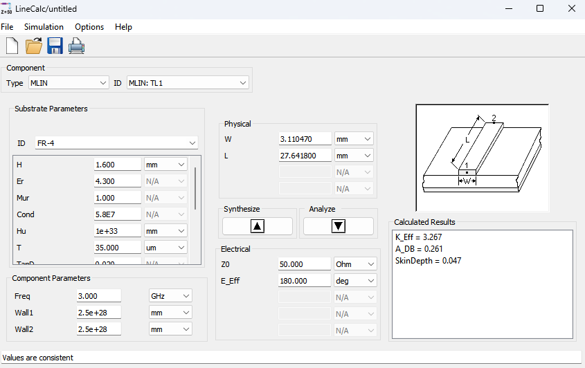
A length sweep from 20 to 30 mm selected
\[W_r=3.110\ \text{mm},\qquad L_r=26.0\ \text{mm},\]which produced a resonance at 2.997 GHz. The 1.642 mm shortening relative to LineCalc corresponds to approximately 5.9%.
The final isolated-resonator error was only −3 MHz, approximately 0.10% of the target frequency. This comparison illustrates why a uniform 180° LineCalc result is an excellent starting point but not a final resonator dimension once practical excitation and end effects are present.
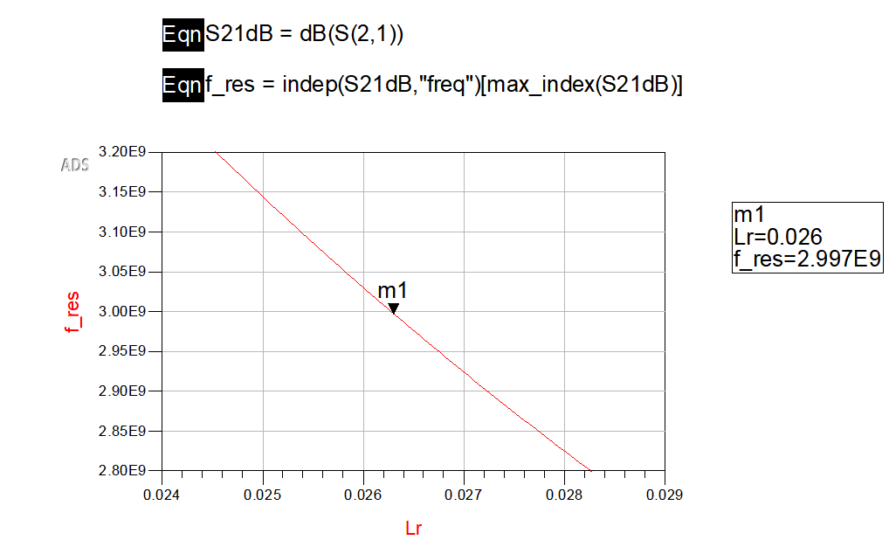
4. Inter-Resonator Coupling Extraction
Two identical resonators were modeled with an ADS MCLIN coupled-line section. Coupling splits the isolated resonance into lower and upper normal modes, and the coupling coefficient was extracted from
The resonators retained the 3.11 mm width and 26.0 mm length found in the isolated test. Weak 1 mm capacitive feeds were placed at opposite corners so that energy reaching the output had to transfer between the resonators. MLEF elements modeled the four open ends, while MCLIN accounted for even- and odd-mode interaction between the parallel traces.
The lower-frequency mode corresponds to one field symmetry and the upper-frequency mode to the other. As coupling becomes stronger, the two modal frequencies move farther apart; as the gap is increased, the split decreases.
\[k=\frac{f_2^2-f_1^2}{f_2^2+f_1^2}.\]At a 1 mm gap, the modes occurred at 2.898 and 3.254 GHz, giving \(k\approx0.1153\), which was stronger than the 0.0707 target.
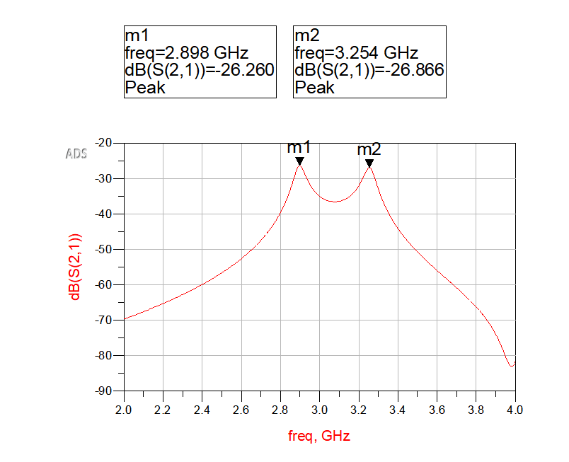
An automated spacing sweep identified the two strongest local transmission peaks, reordered them by frequency, and calculated \(k(S_c)\). The target occurred near a 2.70 mm gap.
The automated extraction was restricted to the 2.5–3.5 GHz fundamental-mode window. Local maxima were detected from slope sign changes, sorted by amplitude, and then reordered by frequency before evaluating the coupling expression. The small staircase visible in the fine sweep came from finite frequency sampling: neighboring gap values sometimes placed both peaks on the same sampled frequency points.
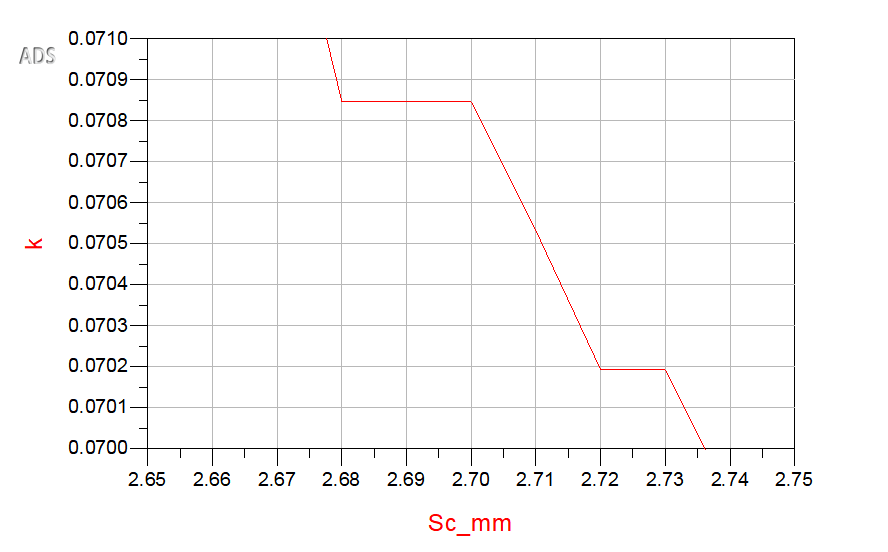
A final fixed simulation with 0.25 MHz frequency resolution produced modes at 2.937 and 3.153 GHz, giving \(k\approx0.07085\), within about 0.2% of the synthesis target.
This fixed verification separated the selected physical dimension from any sweep interpolation. The result established \(S_{12}=S_{23}=2.70\ \text{mm}\) as the first-order circuit-model spacing, while leaving open the possibility that the complete three-resonator EM layout would require later retuning.
5. External-Q Extraction
A capacitive end-gap feed remained far too weak even at very small gaps, so the design moved to a tapped-line feed. The external quality factor was extracted from the localized reflection-phase group-delay response of a lossless one-port resonator.
Conductor and dielectric losses were removed during this characterization so that the extracted quantity represented only energy exchange with the external port. In a lossless one-port resonator, \(|S_{11}|=1\) and the resonance appears mainly as a rapid reflection-phase transition. With reflection group delay
\[\tau_{11}=-\frac{d\phi_{11}}{d\omega},\]the external quality factor was obtained from the localized delay peak:
\[Q_e=\frac{\omega_0|\tau_{11}(\omega_0)|}{4}=\frac{2\pi f_0|\tau_{11}(f_0)|}{4}.\]A 1 mm capacitive end gap produced \(Q_e\approx1105\). Even an impractically small 0.05 mm gap only reduced it to roughly 120, still more than an order of magnitude above the target of 10. The end-gap topology was therefore rejected rather than pushed into a fabrication-sensitive range.
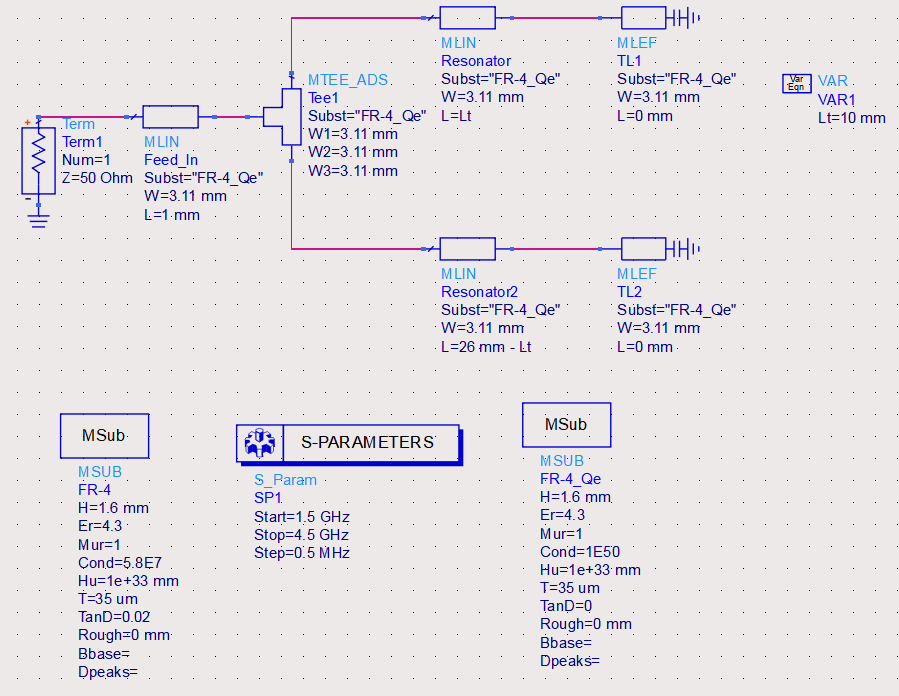
The tapped line connected directly to an intermediate point on the resonator through an MTEE. A 10.0 mm initial tap produced a resonance near 2.77 GHz and \(Q_e\approx16.92\), proving that the desired loading range was now practical. Moving the tap toward the resonator end increased the external loading and lowered \(Q_e\); moving it toward the midpoint weakened the useful coupling and raised \(Q_e\).
A focused 6–10 mm sweep automatically identified the localized group-delay maximum at every tap position. The curve remained smooth around the target, indicating that the selected point was not an isolated numerical artifact. The selected point was
\[L_t=9.04\ \text{mm},\qquad Q_e\approx10.007,\]which closely matched the target value of 10.
The relative error was approximately 0.07%. Because the overall filter was symmetric, the same 9.04 mm tap distance was assigned initially to both the input and output resonators.
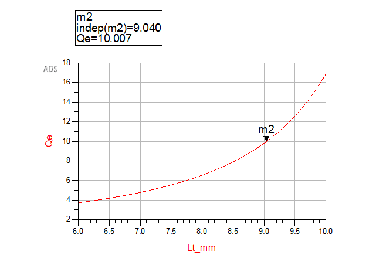
6. Complete ADS Circuit Model and Tuning
6.1 Complete-filter assembly
After the isolated-resonator, inter-resonator-coupling, and external-Q studies were completed, the extracted dimensions were combined into a complete third-order circuit model. The initial values were \(W_r=3.11\ \text{mm}\), \(S_c=2.70\ \text{mm}\), \(L_t=9.04\ \text{mm}\), and \(L_r=26.0\ \text{mm}\).
Three MACLIN3 components were connected in series. These did not represent nine separate resonators; instead, each MACLIN3 block represented one longitudinal portion of the same three parallel resonators. Splitting the geometry at the two tap locations allowed the feeds to be connected through mirrored MTEE junctions while preserving continuous resonator paths.
The three longitudinal sections were defined by
\[L_A=L_t,\qquad L_B=L_r-2L_t,\qquad L_C=L_t,\]so that \(L_A+L_B+L_C=L_r\). With the initial 26.0 mm resonator length and 9.04 mm tap distance, the two end sections were each 9.04 mm and the center section was 7.92 mm. Six MLEF elements modeled the six physical open ends, and 1 mm, 50 Ω feed lines connected the ports to the upper and lower resonators from opposite sides.
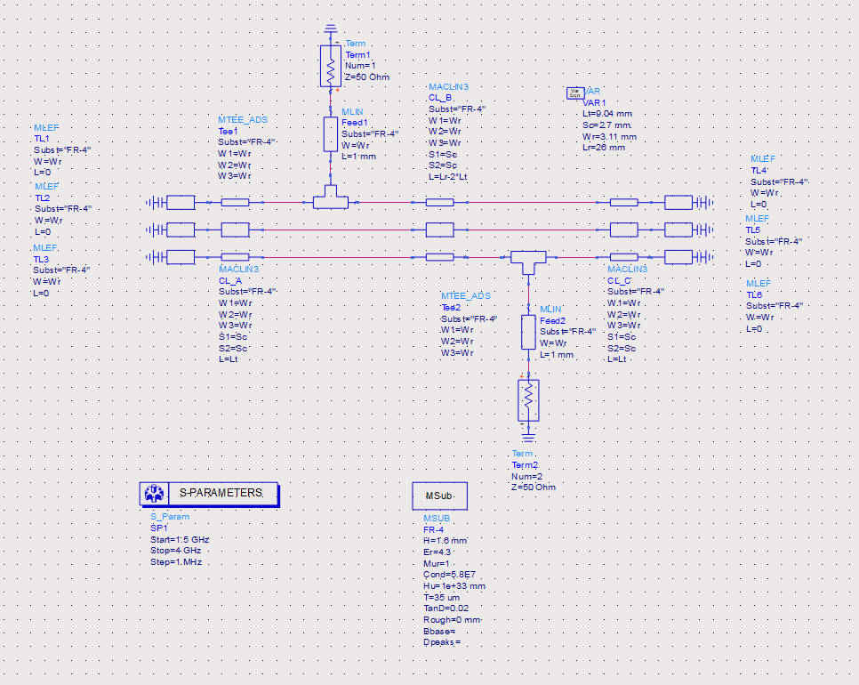
6.2 Initial untuned response
The first complete-filter simulation did not resemble a single third-order Butterworth passband. Instead, it produced a broad lower-frequency lobe near 2.8 GHz and a narrower, better-matched feature near 3.15 GHz. The valley between them remained around −10 to −12 dB.
The upper transmission peak aligned with the deepest reflection minimum, showing that its comparatively strong transmission was associated with good port matching. The input and output responses also agreed to numerical precision, \(S_{11}\approx S_{22}\), confirming that the unexpected shape was not caused by an accidental asymmetry in the schematic.
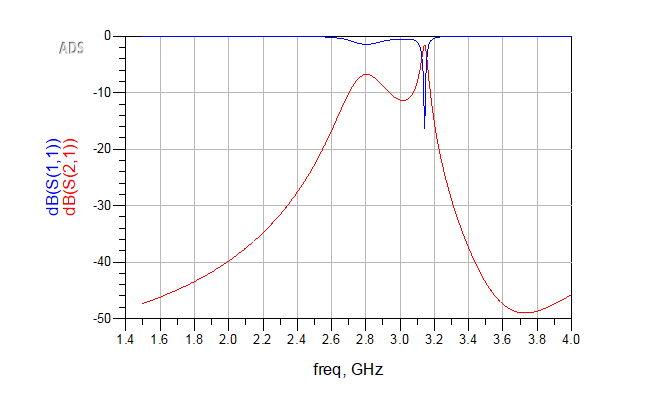
6.3 Why spacing and tap sweeps were not enough
The resonator gap was swept first while \(L_r=26.0\ \text{mm}\) and \(L_t=9.04\ \text{mm}\) were held constant. Increasing the gap weakened the internal coupling and reduced the lower-frequency lobe; decreasing it strengthened the lower mode and slightly increased modal separation. However, the central valley remained for every tested spacing.
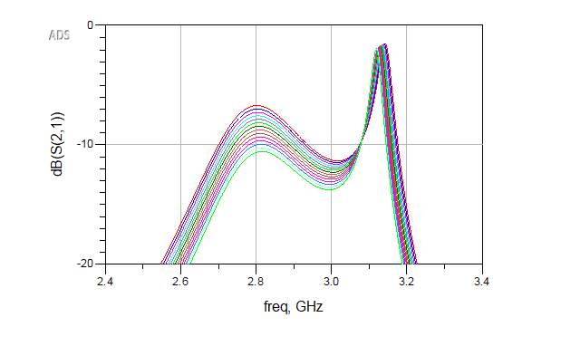
The feed-tap position was then swept with the resonator gap fixed at 2.70 mm. Changing \(L_t\) redistributed the external loading among the resonant modes. Some tap positions equalized the two peak amplitudes but deepened the valley, while others improved the valley at the cost of poor transmission through the lower mode.
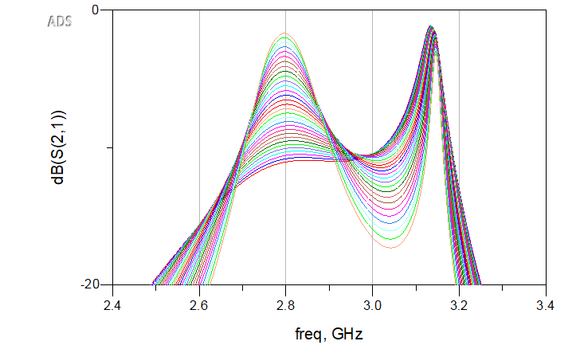
These two sweeps established that the problem was not simply an incorrect coupling gap or an incorrect external quality factor. The key physical difference was that the two outer resonators were loaded by the MTEE junctions and 50 Ω ports, while the center resonator was not. Equal physical lengths therefore did not guarantee equal loaded resonant frequencies:
\[f_{r,\mathrm{outer}}\neq f_{r,\mathrm{center}}.\]6.4 Independent center-resonator tuning
To add an independent modal-alignment control, equal MLIN extensions were added to both ends of the center resonator. If each extension has length \(L_{\mathrm{ext}}\), then
\[L_{\mathrm{ext}}=\frac{\Delta L_c}{2},\qquad L_{\mathrm{center}}=L_r+\Delta L_c.\]Only the center conductor was lengthened; the MACLIN3 connections and the two outer resonators remained unchanged.
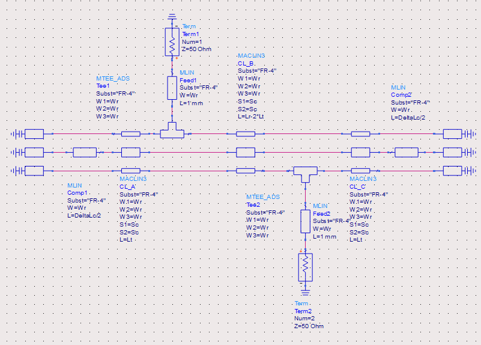
Sweeping \(\Delta L_c\) moved the center-dominated mode downward in frequency while the lower-frequency lobe changed much less. As the center resonator was lengthened, the separated transmission regions merged and the valley became progressively shallower.
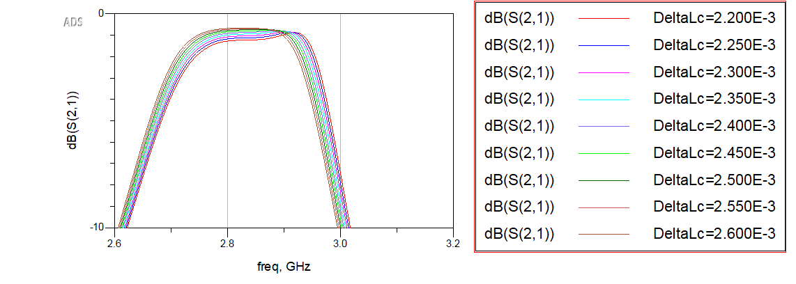
The flattest response occurred near \(\Delta L_c=2.70\ \text{mm}\), corresponding to a 1.35 mm extension at each end. This produced a continuous, nearly flat passband, but the added electrical length shifted the entire response below the 3 GHz target.
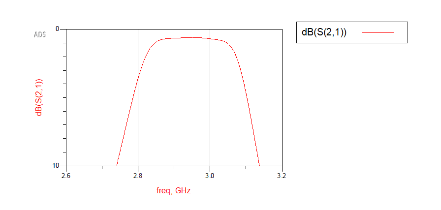
6.5 Common-length recentering
Once the passband shape was corrected, the common baseline resonator length was swept to restore the target center frequency. ADS Data Display evaluated the relative 3 dB center and bandwidth automatically using the restricted \(S_{21}\) trace:
S21dB = dB(S(2,1))
S21w = build_subrange(S21dB, 2.5 GHz, 3.5 GHz)
fc_3dB = center_freq(S21w, 3)
BW_3dB = bandwidth_func(S21w, 3)Shortening the baseline length moved the complete passband upward. The required center frequency occurred at \(L_r=24.10\ \text{mm}\), where ADS extracted \(f_c=2.999\ \text{GHz}\). The final outer-resonator length was therefore 24.10 mm, while the center resonator remained 2.70 mm longer:
\[L_{\mathrm{outer}}=24.10\ \text{mm},\qquad L_{\mathrm{center}}=26.80\ \text{mm}.\]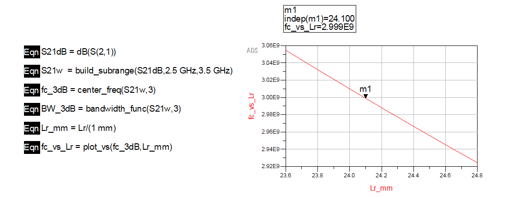
6.6 Final tuned ADS response
The final circuit-level dimensions were:
| Dimension | Final ADS value |
|---|---|
| Resonator width | 3.11 mm |
| Outer resonator length | 24.10 mm |
| Center extension | 2.70 mm total |
| Center resonator length | 26.80 mm |
| Adjacent resonator gaps | 2.70 mm |
| Input/output tap distance | 9.04 mm |
The tuned response formed a continuous flat-topped bandpass centered near 3 GHz. ADS extracted \(f_c=2.999\ \text{GHz}\), a 299.441 MHz relative 3 dB bandwidth, and cutoff frequencies of approximately 2.849 and 3.149 GHz. The resulting fractional bandwidth was 9.99%, and the minimum insertion loss was approximately 0.599 dB.
The 1 MHz center-frequency error corresponds to only −0.033%. The reported 3.752 dB maximum insertion loss and 3.153 dB transmission variation occurred near the relative 3 dB edges and therefore include the intentional Butterworth roll-off; they should not be interpreted as unwanted passband ripple. Likewise, return loss evaluated exactly at those cutoff frequencies is not equivalent to the separate 15 dB matching objective for the usable interior of the passband.
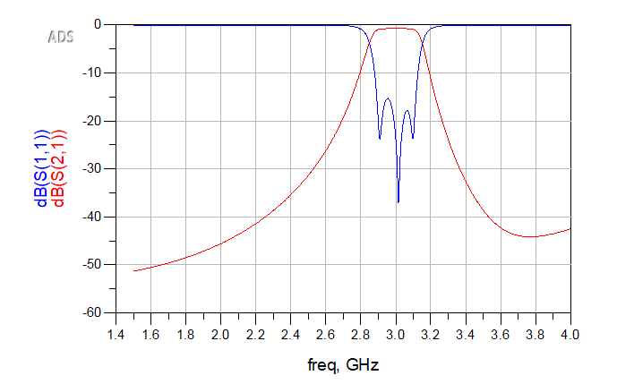
7. Momentum Physical Validation
The tuned ADS circuit was converted into a continuous physical microstrip layout and simulated in Momentum. TML-calibrated 50 Ω ports were placed at the feed-line edges, with the FR-4 substrate and finite ground plane represented directly.
The segmented circuit elements were replaced by five united copper regions: three parallel open-ended resonators and two perpendicular feeds. Momentum then calculated coupling from the actual gap, overlap, substrate, current distribution, open ends, and T-junctions rather than from an imposed coupling coefficient. This introduced nonadjacent coupling, frequency-dependent field redistribution, radiation, and discontinuity effects that were only approximated in the circuit model.
The substrate stack used 1.6 mm FR-4 with \(\varepsilon_r=4.3\), 35 μm copper, air above the traces, and a continuous ground plane below. Both ports used 50 Ω TML calibration at uniform feed-line cross-sections.
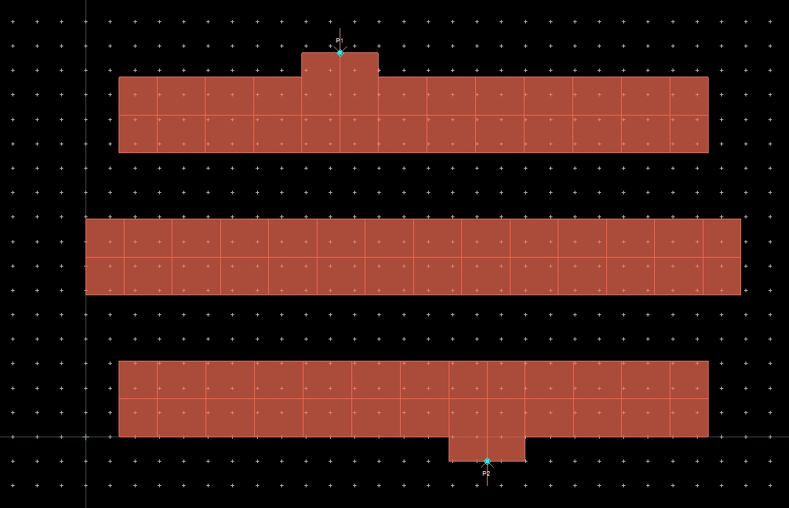
The first lossy Momentum result did not reproduce the circuit response: peak transmission was only about −11 to −12 dB. A straight 50 Ω line validated the substrate and port setup, while a lossless filter run improved peak transmission to roughly −5 dB but retained the same basic response shape.
The validation line used the same stackup, conductor mapping, port type, calibration, and frequency range as the filter. Its transmission near 3 GHz was approximately −0.35 dB, a physically reasonable value for a short FR-4 microstrip line. This ruled out a fundamental port, ground, or substrate-definition error.
The lossless comparison separated two effects. Removing dielectric and conductor loss recovered several decibels, confirming that FR-4 was significant, but the persistence of the same modal shape showed that material loss was not the primary reason the synthesized passband disappeared. The dominant problem was the physical coupling and loading network.
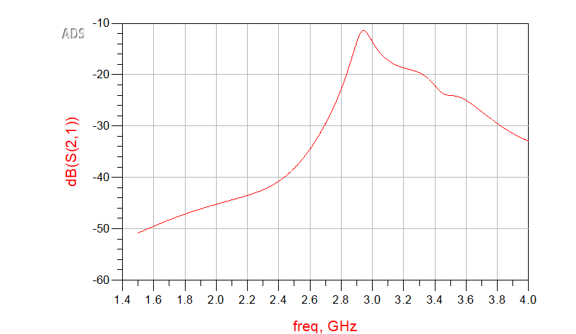
This established that material loss was important but was not the sole cause. The physical coupling and loading of the complete layout differed substantially from the simplified circuit extraction, so the geometry was transferred to HFSS for controlled parametric optimization.
8. HFSS Full-Wave Optimization
The HFSS model parameterized the resonator lengths, center-resonator extension, gap, feed tap, board dimensions, copper thickness, and port positions. The same center-aligned physical topology was retained.
The model used mirrored lumped ports between each feed trace and the ground plane. All resonators, feeds, substrate, and ground dimensions were controlled by project variables, allowing the geometry itself—not an equivalent circuit—to be swept systematically. The final board dimensions were approximately 54.17 mm by 22.03 mm.
The first HFSS run used the circuit-derived dimensions without retuning. Its agreement with Momentum was a critical cross-check: two independent full-wave solvers produced the same weak response even though their meshing and field-solution methods differed.
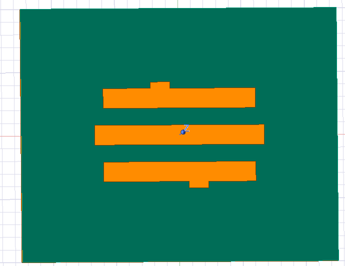
The initial HFSS response closely matched Momentum, with a dominant peak near 2.9 GHz and only about −10.5 dB transmission. Agreement between two independent full-wave solvers confirmed that the issue was the physical geometry rather than one solver.
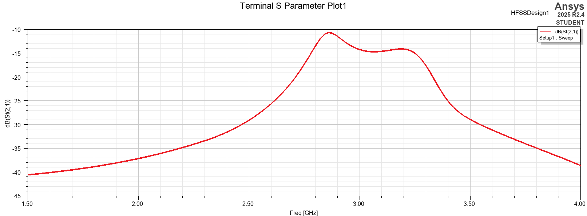
8.1 Tap and resonator-length studies
A coarse tap sweep changed the relative excitation of the resonant modes but could not independently form the intended passband.
The initial tap sweep covered 5.5–11.0 mm. Smaller taps generally strengthened the lower-frequency region, while larger taps changed the balance toward the higher-frequency mode. Because the two-region structure remained for every tap value, the sweep demonstrated that external loading alone could not correct the filter.
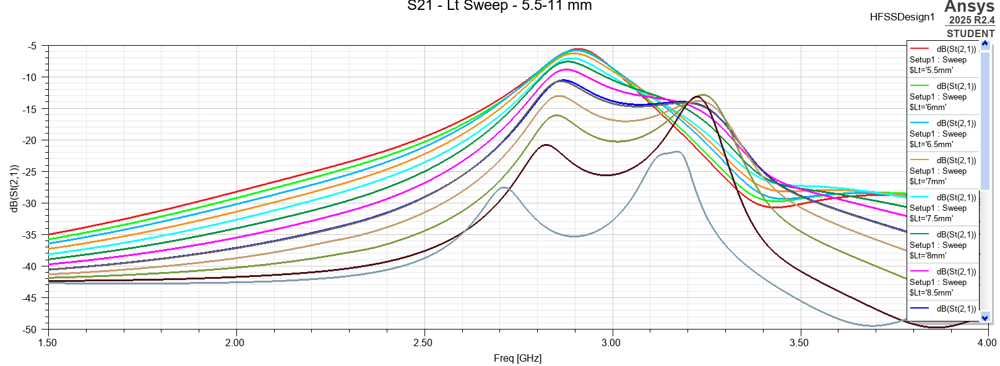
The center-resonator extension mainly shifted and aligned the modal frequencies. A value of \(\Delta L_c=1.75\ \text{mm}\) was selected as the intermediate tuning point.
The extension was swept from 0 to 3.5 mm. Lengthening the center resonator moved the dominant response downward with comparatively less change to the overall coupling bandwidth, making \(\Delta L_c\) primarily a modal-frequency alignment parameter in this physical model.
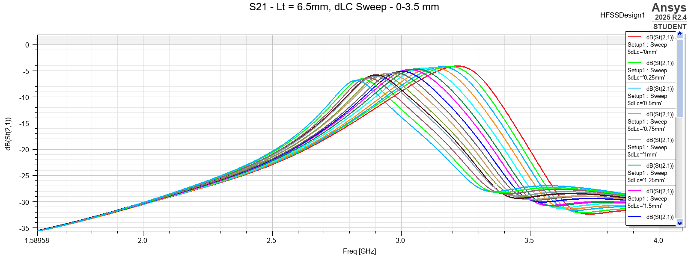
8.2 Internal coupling and final tap refinement
The resonator gap was the dominant bandwidth control. Reducing \(S_c\) strengthened coupling, widened the response, and improved return loss. A fine bandwidth extraction selected approximately \(S_c=1.35\ \text{mm}\) for a 300 MHz target.
The relative bandwidth was extracted against each variation's own transmission maximum:
\[BW_{3\mathrm{dB}}=XWidthAtYVal\!\left(S_{21,\mathrm{dB}},\max(S_{21,\mathrm{dB}})-3\right).\]Reducing the gap increased transmission, widened the modal spread, and deepened the central reflection minimum. The final 1.35 mm gap was half the 2.70 mm value obtained from the isolated ADS pair, showing how strongly the complete center-aligned three-line structure differed from the preliminary pairwise extraction.
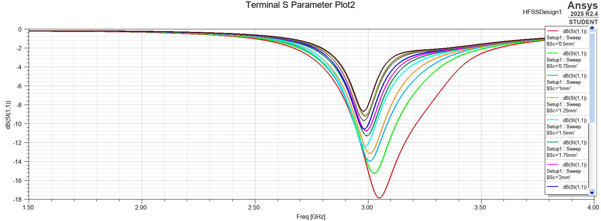
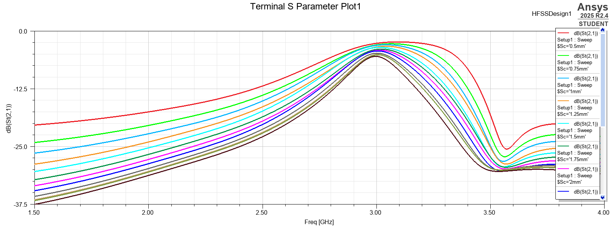
After correcting the internal coupling, a refined tap sweep selected \(L_t=5.70\ \text{mm}\) as the best compromise between peak transmission and matching.
At this stage the tap had much less influence on bandwidth than in the original sweep; it primarily controlled the external match and small passband tilt. This sequencing—first mode alignment, then internal coupling, then final external loading—proved more effective than attempting to optimize all dimensions simultaneously.
8.3 Finite-board convergence
The nominally lossless model still exhibited missing two-port power, calculated as
\[P_{\mathrm{missing}}=1-|S_{11}|^2-|S_{21}|^2.\]A board-margin sweep showed non-monotonic finite-board sensitivity at small margins but convergence near 14–15 mm. The final margin was set to 14 mm. The converged deficit remained near 20%, so it could not be explained solely by an undersized board; radiation and residual numerical effects remained possible contributors.
Because the dielectric and conductors were ideal in this study, the deficit represented power that did not return through either lumped port. The open radiation boundary made radiated power a plausible contributor, but no direct boundary-power or far-field integration was performed, so the deficit was not assigned entirely to radiation.
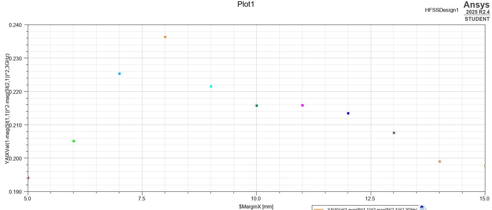
9. Final Results and Design Discussion
9.1 Final geometry
| Parameter | Final HFSS value |
|---|---|
| Outer resonator length \(L_o\) | 24.42 mm |
| Center extension \(\Delta L_c\) | 1.75 mm |
| Center resonator length \(L_c\) | 26.17 mm |
| Resonator width \(W_r\) | 3.11 mm |
| Resonator gap \(S_c\) | 1.35 mm |
| Tap distance \(L_t\) | 5.70 mm |
| Feed width / length | 3.11 mm / 5.00 mm |
| Horizontal board margin | 14 mm |
9.2 Lossless and realistic FR-4 responses
The same frozen geometry was simulated twice. The lossless case used ideal conductors and \(\tan\delta=0\) to evaluate the electromagnetic geometry. The realistic case restored copper and a dispersive Djordjevic–Sarkar FR-4 model referenced to \(\varepsilon_r=4.3\) and \(\tan\delta=0.02\) at 3 GHz. Holding geometry fixed isolated the effect of material modeling from a simultaneous dimensional retune.
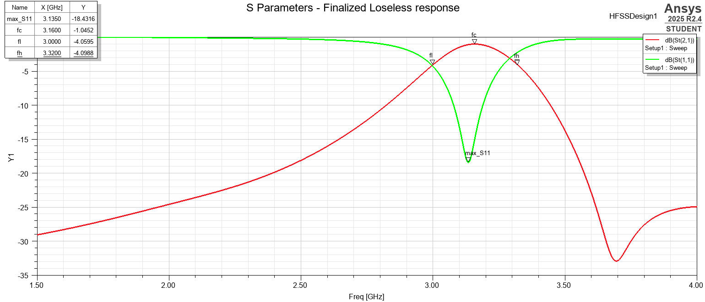
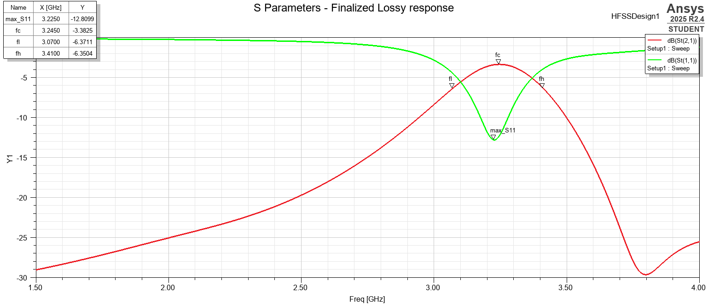
| Metric | ADS circuit | HFSS lossless | HFSS realistic FR-4 |
|---|---|---|---|
| Band center | 2.999 GHz | 3.160 GHz | 3.240 GHz |
| 3 dB bandwidth | 299.4 MHz | 320 MHz | 340 MHz |
| Fractional bandwidth | ≈10.0% | 10.13% | 10.49% |
| Peak \(S_{21}\) | −0.599 dB | −1.045 dB | −3.383 dB |
| Minimum \(S_{11}\) | Acceptable passband matching | −18.432 dB | −12.810 dB |
The realistic materials introduced an additional 2.338 dB transmission penalty relative to the lossless model, shifted the band center upward by 80 MHz, and widened the bandwidth by 20 MHz.
For the lossless model, the −3 dB edges were 3.000 and 3.320 GHz, giving a 3.160 GHz arithmetic band center and 10.13% fractional bandwidth. The realistic model edges were 3.070 and 3.410 GHz, giving a 3.240 GHz band center and 10.49% fractional bandwidth. The minimum reflection values occurred near 3.135 and 3.225 GHz, respectively, slightly below the transmission peaks.
The bandwidth objective was therefore met closely, but the realistic model did not meet every original specification: its center was 8% high, peak insertion loss was 3.383 dB, and the best reflection minimum of −12.810 dB did not demonstrate 15 dB matching throughout a defined interior passband.
The large geometry corrections relative to the ADS extraction—gap from 2.70 to 1.35 mm, tap distance from 9.04 to 5.70 mm, and center extension from 2.70 to 1.75 mm—show that the complete physical interaction was not represented fully by the preliminary coupled-line sections.
This circuit-to-layout discrepancy is itself an important result. The circuit model was highly effective for deriving targets and obtaining a working first-order design, but its physical dimensions were not fabrication-ready. Open ends, tee discontinuities, finite overlap, nonadjacent coupling, and simultaneous three-resonator interaction changed both the internal coupling and the external loading.
9.3 Resonator alignment note
The implemented resonators are longitudinally center-aligned, while many conventional parallel-coupled-line filters use a staggered staircase arrangement. Longitudinal offset changes overlap, mode coupling, and open-end interaction, so it may be one contributor to the circuit-to-layout discrepancy. No staggered filter was simulated here, so it remains a future alternative rather than a validated comparison.
9.4 Substrate sensitivity
As a brief sensitivity check, replacing the generic FR-4 with a lower-loss Rogers laminate while retaining the same geometry improved peak transmission to approximately −1.5 dB, but moved the passband center to roughly 3.5 GHz. The improvement confirms the importance of dielectric loss, while the frequency shift shows that a substrate change requires a complete electrical redesign: feed width, resonator lengths, gaps, and tap positions must all be recalculated and retuned.
10. Limitations and Future Work
- The realistic passband center is 3.240 GHz rather than the original 3.00 GHz objective.
- The realistic peak insertion loss is 3.383 dB, reflecting both the intrinsic open-structure deficit and FR-4 material loss.
- The generic FR-4 properties are representative rather than tied to a characterized laminate lot.
- Copper roughness, etch profile, connector launches, via fences, enclosures, and fabrication tolerances were not modeled.
- The missing power in the lossless model was not separated directly into radiation and numerical contributions.
- The design has not yet been fabricated or measured with a vector network analyzer.
The center-frequency error could be corrected by lengthening and then reoptimizing the complete realistic geometry, but that retune was not performed because the final lossless-versus-lossy comparison intentionally used identical dimensions. A production design should optimize directly with the characterized laminate that will be fabricated.
FR-4 values vary with resin content, glass weave, frequency, temperature, and manufacturer. Copper surface roughness and etched sidewall shape would add further loss beyond a smooth-conductor model. Likewise, real SMA launches introduce pad capacitance, pin inductance, ground-via inductance, and fixture loss that would have to be included or de-embedded.
A tolerance study should sweep resonator lengths, the 1.35 mm gaps, tap positions, substrate thickness, and material permittivity. Resonator-length errors will primarily shift frequency, gap errors will alter bandwidth, and tap errors will change matching. Fabrication and calibrated VNA measurement are required before the design can be treated as experimentally validated.
The highest-priority next step is to retune the complete realistic model to 3 GHz on a characterized low-loss substrate, then perform tolerance analysis, add realistic launches, evaluate radiation control, and fabricate the filter.
11. Conclusions
This project demonstrates a complete coupled-resonator filter workflow: normalized Butterworth synthesis, isolated resonator tuning, coupling-coefficient extraction, external-Q extraction, complete ADS assembly, Momentum physical validation, independent HFSS confirmation, and topology-specific full-wave optimization.
The ADS circuit model met the nominal 3 GHz and 10% bandwidth targets closely, but direct translation to the physical center-aligned layout failed in both Momentum and HFSS. Systematic HFSS sweeps recovered a clear passband with approximately the intended fractional bandwidth, while the realistic FR-4 model quantified the practical loss and frequency-shift penalties.
The strongest lesson was methodological: a successful coupled-resonator synthesis defines the required electrical relationships, but the final layout must be evaluated as a complete field problem. The independent Momentum and HFSS results prevented the poor initial physical response from being dismissed as a solver artifact, and the staged HFSS sweeps exposed the separate roles of mode alignment, internal coupling, external loading, and board size.